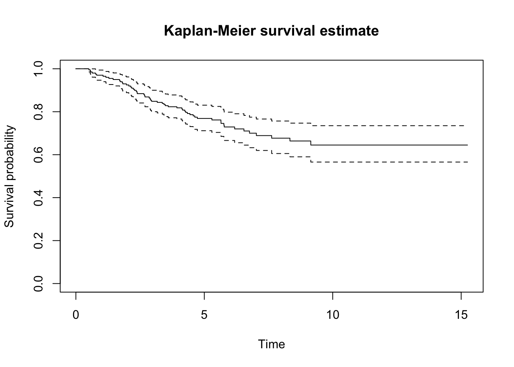

The data concern 205 patients with malignant melanoma who were operated at the university hospital in Odense, Denmark, in the period 1962-77. The patients were followed up to death or censored at the end of the study. We shall study the effect on survival of the patient’s gender and tumor thickness.
The variables included in the dataset are:
status (1=death from disease, 2=censored, 4=death from other causes)
lifetime (years) from operation
ulceration of tumor (1=yes, 2=no)
tumor thickness in 1/100 mm
gender (f=1, m=2)
age at operation in years
grouped tumor thickness (1: 0-1 mm, 2: 2-5 mm, 3: 5+ mm)
logarithm of tumor thickness
First we load the dataset, and check what columns are there.
# if you do not have survival package, install it by # install.packages('survival')library(survival)melanoma <-read.csv('data/melanoma.csv')head(melanoma)
status lifetime ulceration tumor_thickness gender age
1 4 0.02739726 Yes 6.76 m 76
2 4 0.08219178 No 0.65 m 56
3 2 0.09589041 No 1.34 m 41
4 4 0.27123288 No 2.90 f 71
5 1 0.50684932 Yes 12.08 m 52
6 1 0.55890411 Yes 4.84 m 28
grouped_tumor_thickness logarithm_of_tumor_thickness
1 5+ mm 1.9110229
2 0-2 mm -0.4307829
3 0-2 mm 0.2926696
4 2-5 mm 1.0647107
5 5+ mm 2.4915512
6 2-5 mm 1.5769147
The “event of interest” is defined as “death from disease”. Pre-process the variables that R will use for basic survival analysis as shown in class.
We only need “death from melanoma” or else, hence we need to recode the status variable which originally had three categories.
# if status == 1, code 1; otherwise, code 0# this indicates whether deaths from melanomadeath <-ifelse(melanoma$status ==1, 1, 0)# check if the labels are correcttable(death)
death
0 1
148 57
table(melanoma$status)
1 2 4
57 134 14
You can see that the category melanoma$status == 1 should match death == 1, and melanoma$status of 2 and 4 are merged together and coded as death == 0.
1b)
Make a Kaplan-Meier plot of the survival curve. What are the estimated probabilities of surviving 1 year, 2 years, 5 years?
# take lifetime variablelifetime <- melanoma$lifetimekm_fit <-survfit(Surv(lifetime, death) ~1)plot(km_fit)# add title and texttitle(main ='Kaplan-Meier survival estimate', xlab ='Time', ylab ='Survival probability')

Now we check only time 1, 2, 5.
# time 1, 2, 5tme <-c(1, 2, 5)summary(km_fit, times = tme)
# test difference with logrank test survdiff(Surv(lifetime, death) ~ grouped_tumor_thickness)
Call:
survdiff(formula = Surv(lifetime, death) ~ grouped_tumor_thickness)
N Observed Expected (O-E)^2/E (O-E)^2/V
grouped_tumor_thickness=0-2 mm 109 13 33.75 12.75 31.36
grouped_tumor_thickness=2-5 mm 64 30 16.39 11.30 15.88
grouped_tumor_thickness=5+ mm 32 14 6.86 7.42 8.45
Chisq= 31.6 on 2 degrees of freedom, p= 1e-07
Exercise 2: Length of hospital stay
The data was collected at the Geriatric Department at Ullevål Sykehus. Below is a description of the data set liggetid. The file includes the following variables:
Year of birth (faar)
Month of birth (fmaan)
Day of birth (fdag)
Year of hospital admission (innaar)
Month of admission (innmaan)
Day of admission (inndag)
Year of discharge from hospital (utaar)
Month of discharge (utmaan)
Day of discharge (utdag)
Gender, where 1 = male and 0 = female (kjoenn)
Admission from, where 1 = home, 2 = Div. of Medicine, 3 = Div. of Surgery, 4 = Other division, 5 = Other hospital, 6 = Nursing home (kom_fra)
Stroke, where 1 = yes, 0 = no (slag)
Age (alder)
Hospital stay, in days (liggetid)
Logarithm of hospital stay (lnliggti)
Comes from Div. of Medicine (kom_fra2)
Comes from Div. of Surgery (kom_fra3)
Comes from Other division (kom_fra4)
Comes from Other hospital (kom_fra5)
Comes from Nursing home (kom_fra6)
Censoring variable (censor)
The variable liggetid time is calculated from the innaar, innmaan, inndag, utaar, utmaan and utdag variables.
Call:
survdiff(formula = Surv(los, status) ~ stroke)
n=1054, 85 observations deleted due to missingness.
N Observed Expected (O-E)^2/E (O-E)^2/V
stroke=0 891 891 864 0.814 4.61
stroke=1 163 163 190 3.714 4.61
Chisq= 4.6 on 1 degrees of freedom, p= 0.03
Source Code
---title: "Survival analysis"description: "Kaplan-Meier curve, log rank tests"format: html: code-fold: false code-tools: trueeditor: source---Datasets* Exercise 1: `melanoma`([rda link](https://github.com/ocbe-uio/teaching_mf9130e/blob/main/lab/data/melanoma.rda), [csv link](https://github.com/ocbe-uio/teaching_mf9130e/blob/main/lab/data/melanoma.csv))* Exercise 2: `liggetid` ([rda link](https://github.com/ocbe-uio/teaching_mf9130e/blob/main/lab/data/liggetid.rda), [csv link](https://github.com/ocbe-uio/teaching_mf9130e/blob/main/lab/data/liggetid.csv))[R script](https://github.com/ocbe-uio/teaching_mf9130e/blob/main/lab/code/10_survival.R)------------------# Examples (exercises with solution)## Exercise 1: Melanoma The data concern 205 patients with malignant melanoma who were operated at the university hospital in Odense, Denmark, in the period 1962-77. The patients were followed up to death or censored at the end of the study. We shall study the effect on survival of the patient’s gender and tumor thickness.The variables included in the dataset are:* status (1=death from disease, 2=censored, 4=death from other causes) * lifetime (years) from operation* ulceration of tumor (1=yes, 2=no)* tumor thickness in 1/100 mm* gender (f=1, m=2)* age at operation in years* grouped tumor thickness (1: 0-1 mm, 2: 2-5 mm, 3: 5+ mm) * logarithm of tumor thicknessFirst we load the dataset, and check what columns are there.```{r}#| label: melanoma-1#| warning: false#| echo: true# if you do not have survival package, install it by # install.packages('survival')library(survival)melanoma <-read.csv('data/melanoma.csv')head(melanoma)colnames(melanoma)```### 1a) The “event of interest” is defined as “death from disease”. Pre-process the variables that R will use for basic survival analysis as shown in class.We only need "death from melanoma" or else, hence we need to recode the `status` variable which originally had three categories.```{r}#| label: melanoma-a1#| warning: false#| echo: true# if status == 1, code 1; otherwise, code 0# this indicates whether deaths from melanomadeath <-ifelse(melanoma$status ==1, 1, 0)# check if the labels are correcttable(death)table(melanoma$status)```You can see that the category `melanoma$status == 1` should match `death == 1`, and `melanoma$status` of 2 and 4 are merged together and coded as `death == 0`. ### 1b) Make a Kaplan-Meier plot of the survival curve. What are the estimated probabilities of surviving 1 year, 2 years, 5 years?```{r}#| label: melanoma-b1#| warning: false#| echo: true# take lifetime variablelifetime <- melanoma$lifetimekm_fit <-survfit(Surv(lifetime, death) ~1)plot(km_fit)# add title and texttitle(main ='Kaplan-Meier survival estimate', xlab ='Time', ylab ='Survival probability')```Now we check only time 1, 2, 5. ```{r}#| label: melanoma-b2#| warning: false#| echo: true# time 1, 2, 5tme <-c(1, 2, 5)summary(km_fit, times = tme)```### 1c)Compare survival according to gender. Test the difference with a logrank test.```{r}#| label: melanoma-c1#| warning: false#| echo: true# gender == 1: female; gender == 2: malegender <- melanoma$genderkm_fit_gender <-survfit(Surv(lifetime, death) ~ gender)plot(km_fit_gender, col =c('blue', 'red'))title(main ='Kaplan-Meier survival estimate: stratify by gender', xlab ='Time', ylab ='Survial probability')# add legendlegend( 'bottomleft', legend =c('Female', 'Male'), lty =c('solid', 'solid'), col =c('blue','red'))```Now we test the difference with log-rank test```{r}#| label: melanoma-c2#| warning: false#| echo: true# test difference with logrank test survdiff(Surv(lifetime, death) ~ gender)```### 1d) Study survival according to grouped tumor thickness by comparing survival curves in each group and test with a logrank test.First we do some data processing```{r}#| label: melanoma-d1#| warning: false#| echo: true# take out the variablegrouped_tumor_thickness <- melanoma$grouped_tumor_thickness# get an idea how many categoriestable(grouped_tumor_thickness)```Now we plot the KM plot, and carry out a log-rank test```{r}#| label: melanoma-d2#| warning: false#| echo: truekm_fit_tumor <-survfit(Surv(lifetime, death) ~ grouped_tumor_thickness)plot(km_fit_tumor, col =c('blue', 'red', 'forestgreen'))title(main ='Kaplan-Meier survival estimate: stratify by tumor thickness', xlab ='Time', ylab ='Survial probability')# add legendlegend( 'bottomleft', legend =c('0-2 mm', '2-5 mm', '5+ mm'), lty =c('solid', 'solid', 'solid'), col =c('blue','red', 'forestgreen'))# test difference with logrank test survdiff(Surv(lifetime, death) ~ grouped_tumor_thickness)```## Exercise 2: Length of hospital stay The data was collected at the Geriatric Department at Ullevål Sykehus. Below is a description of the data set `liggetid`. The file includes the following variables:- Year of birth (faar)- Month of birth (fmaan)- Day of birth (fdag)- Year of hospital admission (innaar)- Month of admission (innmaan)- Day of admission (inndag)- Year of discharge from hospital (utaar)- Month of discharge (utmaan)- Day of discharge (utdag)- Gender, where 1 = male and 0 = female (kjoenn)- Admission from, where 1 = home, 2 = Div. of Medicine, 3 =Div. of Surgery, 4 = Other division, 5 = Other hospital, 6 =Nursing home (kom_fra)- Stroke, where 1 = yes, 0 = no (slag)- Age (alder)- Hospital stay, in days (liggetid)- Logarithm of hospital stay (lnliggti)- Comes from Div. of Medicine (kom_fra2)- Comes from Div. of Surgery (kom_fra3)- Comes from Other division (kom_fra4)- Comes from Other hospital (kom_fra5)- Comes from Nursing home (kom_fra6)- Censoring variable (censor)The variable `liggetid` time is calculated from the `innaar`, `innmaan`, `inndag`, `utaar`, `utmaan` and `utdag` variables. ```{r}#| label: liggetid#| warning: false#| echo: trueliggetid <-read.csv('data/liggetid.csv')head(liggetid)colnames(liggetid)# all status are 1 status <- liggetid$status```### 2a) Analyze the relationship between the variables `liggetid` and `kjoenn` with a Kaplan-Meier plot. Test the difference with a log-rank test.```{r}#| label: liggetid-a1#| warning: false#| echo: true# length of stay (los) vs genderlos <- liggetid$liggetidhead(los)# take out gender variablegender <- liggetid$kjoennhead(gender)# fit km km_liggetid_gender <-survfit(Surv(los, status) ~ gender)plot(km_liggetid_gender, col =c('blue', 'red'))title(main ='Kaplan-Meier survival estimate: stratify by gender', xlab ='Time', ylab ='Survial probability')# add legendlegend( 'topright', legend =c('Female', 'Male'), lty =c('solid', 'solid'), col =c('blue','red'))```Now we do log-rank test```{r}#| label: liggetid-a2#| warning: false#| echo: true# log rank test survdiff(Surv(los, status) ~ gender)```### 2b) Analyze the relationship between the variables `liggetid` and `slag` with a Kaplan-Meier plot. Test the difference with a log-rank test.```{r}#| label: liggetid-b1#| warning: false#| echo: true# length of stay vs stroke# slag == 1: yes, slag == 2: nostroke <- liggetid$slag# fit km km_liggetid_stroke <-survfit(Surv(los, status) ~ stroke)plot(km_liggetid_stroke, col =c('blue', 'red'))title(main ='Kaplan-Meier survival estimate: stratify by stroke', xlab ='Time', ylab ='Survial probability')# add legendlegend( 'topright', legend =c('Stroke: yes', 'Stroke: no'), lty =c('solid', 'solid'), col =c('blue','red'))``````{r}#| label: liggetid-b2#| warning: false#| echo: true# log rank testsurvdiff(Surv(los, status) ~ stroke)```